01 / LibraryEvery app journey, in one place.
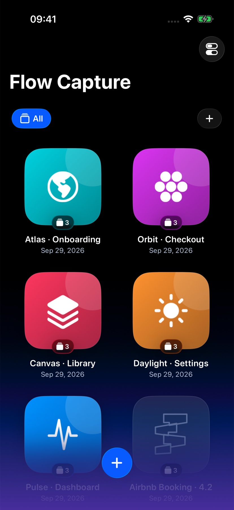
02 / FlowThe actual screens. Still in order.
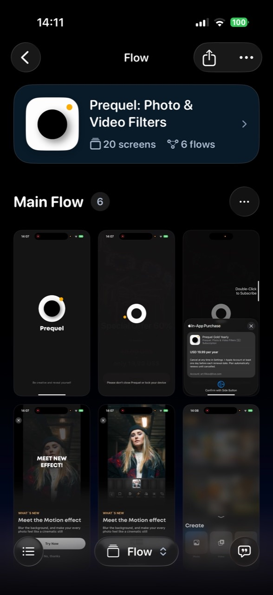
Demo projects in Library · recorded Flow on iPhone
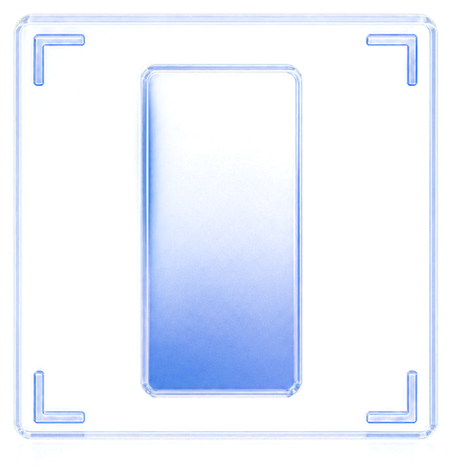
the journey. Keep the context.Turn an iPhone recording into ordered screens, contextual feedback, and a handoff your designer or coding agent can actually use.
Key screens. In the right order. Feedback that stays in context. Originals stay on your iPhone.
01 / LibraryEvery app journey, in one place.

02 / FlowThe actual screens. Still in order.

Demo projects in Library · recorded Flow on iPhone
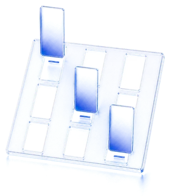
Figma import package, AI review ZIP, PDF and images.
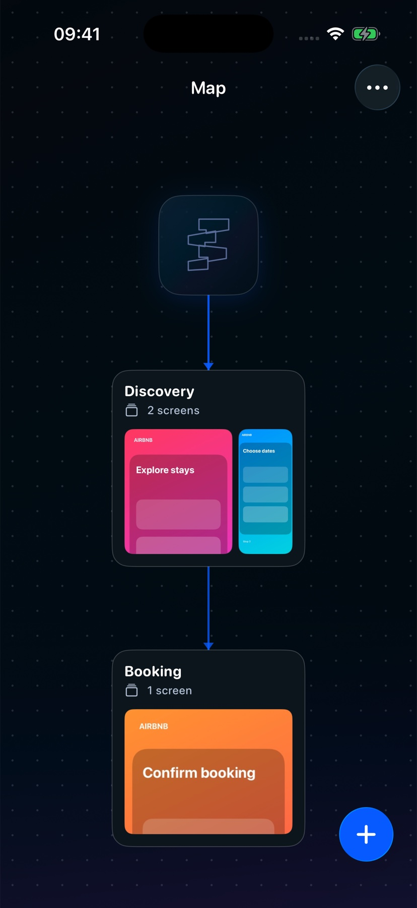
Screen selection On-deviceOriginals stay on your iPhone.
Record a journey with the iOS screen recorder, or import a video or screenshots. Flow Capture finds stable screen states and lets you review what belongs in the flow.
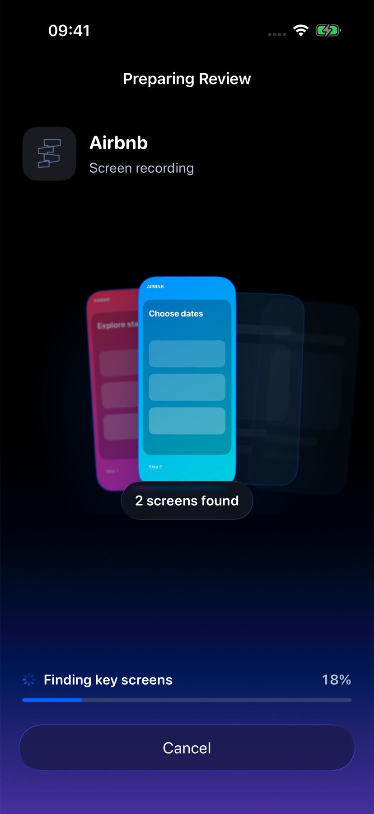
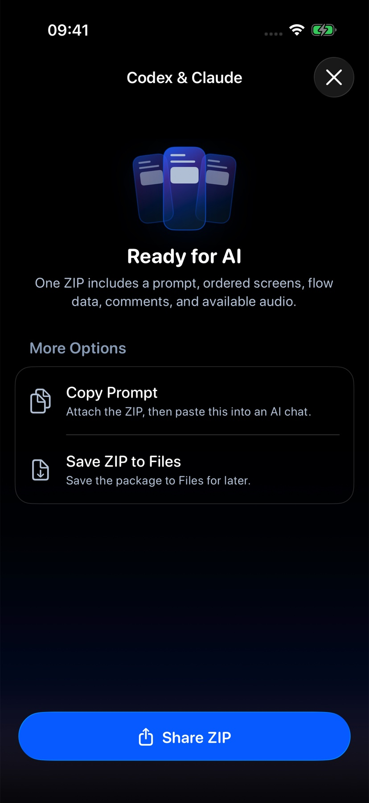
Flow Map groups recorded screens into stages. Add separately captured branches and later versions without pretending one recording revealed paths you never took.
Works with · Export to
Automation gets the first draft. You decide what the finished journey says.
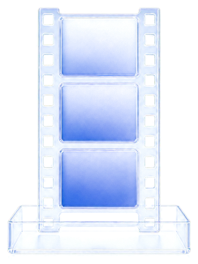
01Inspect the source timeline and bring back a missed screen state.
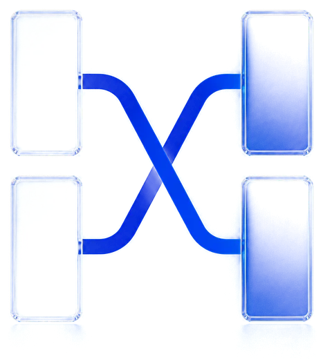
02Rename screens, change their order, and group the journey into stages.
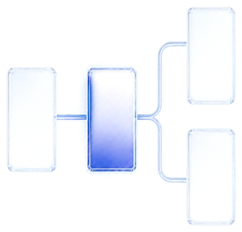
03Capture a branch separately and attach it where the journey diverged.
Keep repeat captures of the same flow without mixing their recordings or comments.
Review suggested redactions before sharing. Original screens stay unchanged.
Use images or PDF for review, an AI package for coding, or a Figma import.
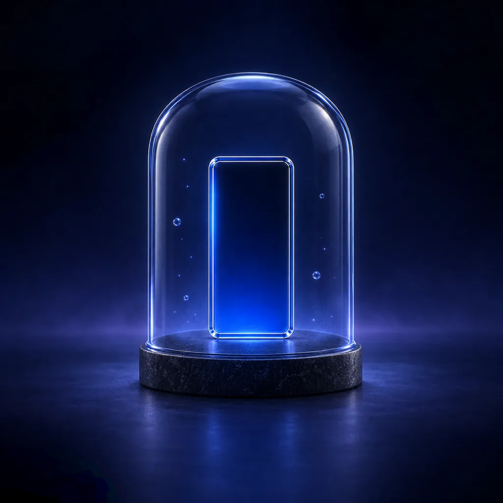
Local-first by designProjects, original recordings, and screenshots remain on your iPhone. Screen selection runs locally. Voice transcription and direct Figma delivery use cloud services only for the actions you choose.
Any app on your iPhone. Record it directly, or import an existing screen recording, a video, or a set of screenshots.
Screen selection runs on your iPhone. The app identifies stable states and reduces repeats. You review what it found, and the Frame Editor can recover a missed state from the original recording.
Original recordings and saved projects stay on your iPhone. Screen selection runs locally. If you request voice transcription, comment polishing, or direct Figma delivery, those optional services send the relevant audio, text, or export data for that action. Offline exports stay local until you share them.
The companion plugin imports screenshots as image layers grouped by flow, with names and order you can edit in Figma. It does not rebuild an app as native Figma UI components. Offline folder import is available without linking an account; direct delivery requires a connected account.
Yes. The AI review ZIP includes a ready-to-use prompt, ordered screenshots, flow data, and any available text or voice transcripts. It is designed for Codex, Claude, and other tools that can read the package.
iPhone running iOS 18 or later, with a visual design tuned for iOS 26.
Not yet. The iPhone app and companion Figma plugin are being prepared for public release. We’ll replace this preview with a direct download link when they are available.
The iPhone app and companion Figma plugin are being prepared for public release.